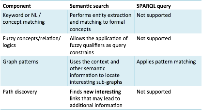

As we can see from the above example, semantic search aims at understanding the meaning of the entities specified in the query. This can involve expanding the entity into a number of candidate synonyms and then matching those to the dataset. Contextual analysis can also be used to decide between alternative meanings by comparing against the subgraph that is being produced by mapping the entities. In some cases (though not seen in the example above) reasoning may be applied in order to derive answers that are not explicitly contained in the data, but can be derived from the data.
Comparing semantic search against querying a dataset using SPARQL we see a number of differences. In semantic search, entities extracted from the search string can be expanded and mapped to resources in the dataset. In SPARQL, generally direct reference will be made to the resources. Semantic search may also allow fuzzy matching in which a weighting or certainty is applied to a mapping between a search term and a resource. Both SPARQL and semantic search work with graph patterns. SPARQL queries are graph patterns applied against the dataset. In semantic search, the sub-graph built up to represent the query can also be used to analyse context. Finally, semantic search can apply reasoning to identify new paths in the data and derive links between resources not explicit in the dataset.

Figure 43: A comparison of semantic search and SPARQL queries.